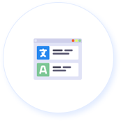

Los mejores tutores para sus hijos.
Enseñanza personalizada
Pedagogía educativa.
99%Técnicas de motivación
95%Experiencia profesional
100%
INVESTIGACIÓN
DESARROLLO
APRENDIZAJE

TITULACIÓN

AMBIENTE FAMILIAR
De niña no me gustaba ir a la escuela, pero tengo gratos recuerdos del ambiente Familiar en el colegio.
-Liseth Fernandez

GRACIAS POR SU PACIENCIA
Aunque de pequeño yo era terrible en el Colegio me enseñaron a ser un adulto.
-Luis Sánchez

MEJORES AÑOS
Mis Años en el colegio fueron los mejores, conocí a mis mejores amigos y aún hoy nos mantenemos unidos
-Luisa Aguirre